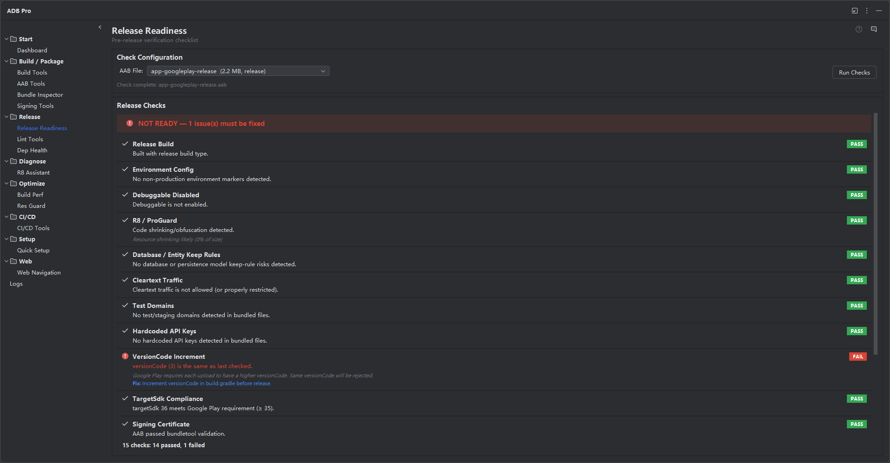

完整的发布前检查清单，在应用进入 Play Store 或其他商店前发现配置错误、安全问题、兼容性风险和策略违规。

Release Readiness 是自动化发布前检查清单，用于验证应用是否已经适合生产部署。每个检查都会分析项目配置、manifest、构建输出、签名身份、bundle metadata 和依赖信息，并给出明确的 pass、fail 或 warning 结果。
它避免团队依赖容易被赶工跳过的手动 checklist，把常见配置错误、安全风险、兼容性问题和策略违规集中到一次扫描报告中。
Release Readiness 会运行一组自动化检查，每个检查都针对发版配置中的一个具体风险点：
确认 release 构建中 android:debuggable 为 false，并检查可能在生产环境开启 debug 行为的 BuildConfig.DEBUG 使用。
确认 release build type 已开启 R8/ProGuard 代码压缩，并展示资源压缩 shrinkResources 状态。
扫描源码和资源文件中的硬编码 API keys、secrets 和 tokens，包括 Google Maps、Firebase、AWS 和第三方 SDK 常见模式。
验证 targetSdkVersion 是否满足当前 Google Play 要求，并检查 compileSdkVersion 与依赖使用是否匹配。
确认 release 构建使用正确 release keystore，而不是 debug keystore，并检查签名 scheme 和证书有效性。
确认 ProGuard/R8 规则文件存在且被引用，提示反射密集库缺少 keep 规则或过度宽泛的 wildcard 规则。
检查 versionCode 和 versionName。相同本地 versionCode 只作为 warning，因为真正阻塞的是目标商店已接受的版本号基线。
检查近期 Android 版本引入的运行时权限、后台执行限制和平台级要求。
列出声明权限，突出位置、相机、麦克风、联系人、电话状态等敏感权限，并提示缺少运行时请求代码的权限。
检查测试 source set 是否存在，并可选运行单元测试，报告测试是否存在、是否通过和上次执行时间。
确认资源压缩是否开启，检查未使用资源和可被 WebP 或 vector drawable 替换的大图片。
验证 allowBackup、usesCleartextTraffic、android:exported 和 networkSecurityConfig 等关键 manifest 属性。
扫描依赖树中的已知漏洞、过期依赖、snapshot 版本和传递依赖冲突。
检查 native libraries 在 Android 15+ 16 KB page-size 设备上的兼容风险。
支持检查本地构建产物或从远程仓库缓存下载的 AAB。远程缓存是产物来源，不会被误判为构建类型。
每个检查结果可以在状态旁提供 Docs 链接，方便团队从 warning/fail 跳转到官方或项目说明。
每个检查会产生五类状态：PASS 表示通过，INFO 表示信息提示，WARNING 表示不阻塞但需要 review，FAIL 表示发布前必须修复，SKIP 表示当前环境无法评估。总 readiness score 只统计 PASS，方便快速判断是否可以发布。
检查结果会持久化，方便跨构建对比。历史视图展示每次扫描的 pass、fail、warning 数量，适合在发版周期中确认 warning 是否减少、近期改动是否引入新 failure。
结果解读方式：
更多配置位于 Settings > Tools > ADB Pro > Release Readiness，可以启用或禁用单个检查、设置 API key patterns、覆盖 targetSdk 要求、启用自动运行和设置阻塞阈值。